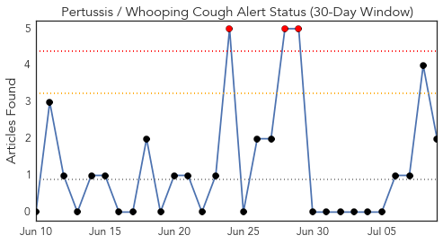
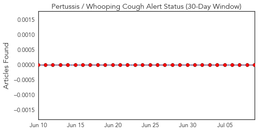
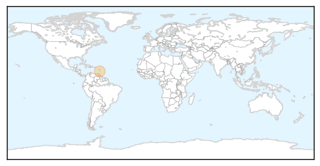
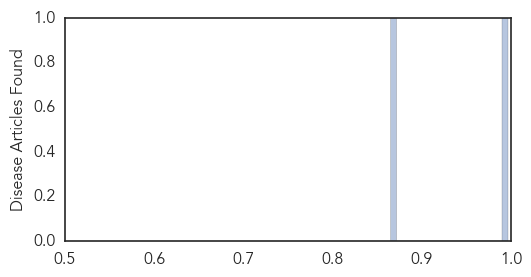

Influenza
30-Day Web Trend
1 alerts, 0 warnings

30-Day Twitter Trend
0 alerts, 0 warnings

Article Locations

Article Confidences

Top Articles:
- 0.973
- www.cowracommunitynews.com
- 0.949
- Discovery points to a new path toward a universal flu vaccine
- 0.751
- July 8, 2015 Archives
- 0.751
- July 8, 2015 Archives
- 0.751
- July 8, 2015 Archives
- 0.751
- July 8, 2015 Archives
- 0.751
- July 8, 2015 Archives
- 0.726
- US Senate Meeting Highlights Dramatic Impact of Avian Flu
- 0.706
- USDA grapples with 'largest animal health emergency'
- 0.648
- Avian Flu Impacting U.S. Poultry Industry
- 0.605
- Dire bird flu talk at Carper hearing
Top Tweets:
-
No tweets found for Jul 09, 2015
Pertussis
30-Day Web Trend
3 alerts, 0 warnings

30-Day Twitter Trend
0 alerts, 0 warnings

Article Locations
Article Confidences
Top Articles:
Top Tweets:
-
No tweets found for Jul 09, 2015